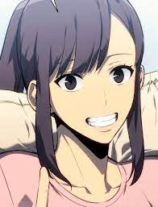

Sung Jinha
C'est la petite sœur de Jinwoo. Elle est encore au lycée et est une personne ordinaire.

Yoo Jinho
Ami chasseur de Jinwoo. C'est le fils de Yoo Myunghan, le directeur de Yoojin construction, dont la fortune est estimée à 7 milliards d'euros.

Go Gunhee
Il était un chasseur coréen de rang S et le président de l'Association des chasseurs coréens, l'agence gouvernementale chargée de superviser tous les chasseurs, portails et guildes actifs en Corée. Bien qu'il se soit révélé plus tard être un vaisseau des dirigeants, il souffrait de divers problèmes de santé dus à son âge avancé, l'empêchant d'utiliser ses pouvoirs à leur puissance maximale, et fut finalement tué par les monarques au combat.

Cha Haein
Elle est l'un des dix chasseurs sud-coréens de rang S, classée 9e, et aussi la seule femme des dix. Elle était la vice-présidente de la Guilde des Chasseurs avant de demander à Jinwoo de rejoindre sa guilde. Elle possède une compétence rare qui lui permet de sentir l'odeur du mana de chaque chasseur, odeur qu'elle déteste, à l'exception de celle de Jinwoo.
Park Kyunghye
Mère de Jinwoo et Jinah. Elle souffre de la maladie du Sommeil Éternel.